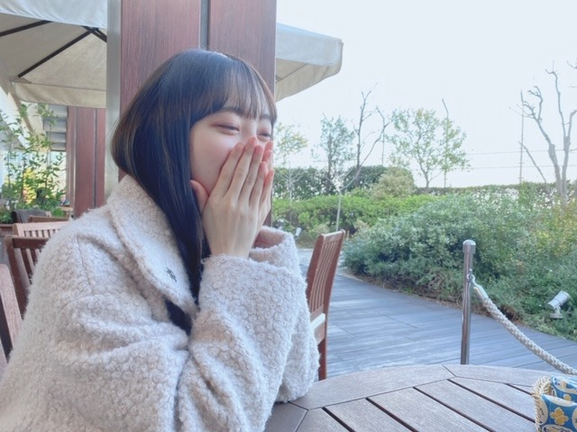
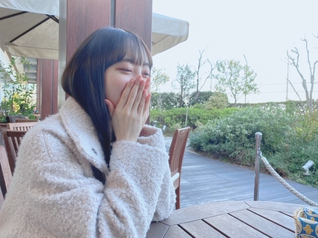

2020/0311Wed春なので
魔女の宅急便
海がきこえる
千と千尋の神隠し
ハウルの動く城
天空の城ラピュタ
風立ちぬ
のサントラをよく聴きます☺︎
映画やドラマのサントラもすき!
サントラって良いですよね
ホットギミックのサントラも欲しい!
あ、まだ観ていない方は是非Netflixにて✨


人見知りを直したいなぁと思うのですが
やはり緊張して静かになってしまうのが悪い癖。
打ち解けるとよく話すんですけどね...
春はやっぱり出会いや別れがたくさんありますね
一期一会を大切に、これからも私らしく
頑張っていきたいです
新しい現場もお別れをする現場も
常に全力で!


最近観た映画は
スケアリーストーリーズ
ロミオとジュリエット
生きてるだけで、愛
IT 最終章
です☺︎
気になってる映画は
パラサイト
ミッドサマー
ナンシー
初恋
ハーレイ・クイン
です☺︎
毎晩寝る前に映画を選んで観て、
あ、たまに寝落ちしてしまうけど
そんな時間が幸せです
今日はなにを観ようかなと悩む時間も好き!
23:45〜
文化放送レコメン！
も聞いてください☺︎

そして今日は3月11日
東日本大震災から9年が経ちました
犠牲となられた方々のご冥福をお祈りいたします...
そして被害に遭われた方々へお見舞い申し上げます
私も今を大切に、一生懸命生きます
3.11 でYahooで検索しましょう!
では
魔女の宅急便
海がきこえる
千と千尋の神隠し
ハウルの動く城
天空の城ラピュタ
風立ちぬ
のサントラをよく聴きます☺︎
映画やドラマのサントラもすき!
サントラって良いですよね
ホットギミックのサントラも欲しい!
あ、まだ観ていない方は是非Netflixにて✨

人見知りを直したいなぁと思うのですが
やはり緊張して静かになってしまうのが悪い癖。
打ち解けるとよく話すんですけどね...
春はやっぱり出会いや別れがたくさんありますね
一期一会を大切に、これからも私らしく
頑張っていきたいです
新しい現場もお別れをする現場も
常に全力で!
最近観た映画は
スケアリーストーリーズ
ロミオとジュリエット
生きてるだけで、愛
IT 最終章
です☺︎
気になってる映画は
パラサイト
ミッドサマー
ナンシー
初恋
ハーレイ・クイン
です☺︎
毎晩寝る前に映画を選んで観て、
あ、たまに寝落ちしてしまうけど
そんな時間が幸せです
今日はなにを観ようかなと悩む時間も好き!
23:45〜
文化放送レコメン！
も聞いてください☺︎
そして今日は3月11日
東日本大震災から9年が経ちました
犠牲となられた方々のご冥福をお祈りいたします...
そして被害に遭われた方々へお見舞い申し上げます
私も今を大切に、一生懸命生きます
3.11 でYahooで検索しましょう!
では
2020/03/11 18:24
コメント(317)
ブログ更新ありがとう！
まさかレコメンあと少しなんて寂しいです。
毎週の楽しみでした。残りわずかだけど楽しみにしてます！
今までありがとう
これからの活躍も楽しみにしてるね！！
まさかレコメンあと少しなんて寂しいです。
毎週の楽しみでした。残りわずかだけど楽しみにしてます！
今までありがとう
これからの活躍も楽しみにしてるね！！
魔女の宅急便のサウンド良いよね！
これから始まる新たな世界がとても好きです♪
未央奈ちゃんにとって最&髙
これから始まる新たな世界がとても好きです♪
未央奈ちゃんにとって最&髙
堀さん、おはようございます。
吹く風の暖かい日が増えてきました。そろそろコートも着なくてよくなりそうです。春の訪れを心待ちにしている今日この頃。
そんな春は出会いと別れの季節。堀さん『レコメン！』からの卒業のお知らせに接し、その思いを強くしています。ほりのりコンビの掛け合いが聴けなくなることを思うと寂しい気持ちでいっぱいです。堀さんの新たな活躍を願っています。
僕も観たい映画たくさんあります。いろいろな作品を楽しみたいものです。わくわく。
ではまたコメントします。今日も元気にがんばりましょう。
さらばだ、また会おう！（気球に乗って去りぬ〜）
吹く風の暖かい日が増えてきました。そろそろコートも着なくてよくなりそうです。春の訪れを心待ちにしている今日この頃。
そんな春は出会いと別れの季節。堀さん『レコメン！』からの卒業のお知らせに接し、その思いを強くしています。ほりのりコンビの掛け合いが聴けなくなることを思うと寂しい気持ちでいっぱいです。堀さんの新たな活躍を願っています。
僕も観たい映画たくさんあります。いろいろな作品を楽しみたいものです。わくわく。
ではまたコメントします。今日も元気にがんばりましょう。
さらばだ、また会おう！（気球に乗って去りぬ〜）
未央奈ちゃんおはようございます！ありがとうございます！頑張ります‼大丈夫ですか？気をつけて下さい！ありがとうございます！頑張ります‼大丈夫ですか？
ほ～り～さんも、やはり魔女ですよね
美魔女！！これ以上進化するのが、怖い(^^;)
美魔女！！これ以上進化するのが、怖い(^^;)
未央奈ちゃんおはよう!レコメン３月で卒業しちゃいますね。寂しくなるなあ!来週はプリン会総出演。楽しみ!最後会は塩アイス出演してほしいなあ!いつか、菅井友香ちゃん、加藤史帆ちゃんとオテンキのりさん総出演で何か映画やドラマ、舞台、バラエティ番組やプライベートで共演してほしいです。今まで忙しいなか、ほぼ毎週水曜日夜遅くお疲れ様です。そして、ありがとう。残り２回の放送楽しみにしています。私はメール読まれたことないので、残り２回の間に読まれ、未央奈ちゃんとのりさんと電話でお話するのが、今の夢であり、目標です。4月から受け継ぐ田村真佑ちゃんをアドバイスなどして、支えてあげてね。未央奈ちゃん大好き
じゃあさジブリ一緒に見ながら人見知り直そうぜ笑 今日も未央奈ショットいただきましたわーい ！ 俺のすること見ざる聞かざる言わざるだぞー！みんなに伝えておいてなぁ！しー
未央奈ちゃん、おはようございます。
レコメン卒業なんだね。毎週、未央奈ちゃんの爽やかな透き通る声・笑い声を楽しみにしていたから残念です。あと２回も確りと聴きます‼
何か別の嬉しいお知らせがあったりしないかなぁ～(笑)
兎に角、良い体調で過ごしてくださいね。
乃木坂46と頑張ってるcuteでsmartな未央奈ちゃんを応援しています。
レコメン卒業なんだね。毎週、未央奈ちゃんの爽やかな透き通る声・笑い声を楽しみにしていたから残念です。あと２回も確りと聴きます‼
何か別の嬉しいお知らせがあったりしないかなぁ～(笑)
兎に角、良い体調で過ごしてくださいね。
乃木坂46と頑張ってるcuteでsmartな未央奈ちゃんを応援しています。
未央奈～～～～～～～～～～～～～～～～。おはよう。そして更新有り難うござます。
そういえば、私もかなりの人見知りですよ。仲間だね。では。
そういえば、私もかなりの人見知りですよ。仲間だね。では。
未央奈レコメンお疲れ様でした。
僕はのりほり亭が面白くて好きでした。
お二人のコンビ最高でした。
昨日の放送では2期生ライブ視聴者が10万人いけば良い方だと思ってたと言ってましたが、自らを過小評価するのは終わりにしましょう。
自分達が思ってるほど2期生は期待されてないわけではないです。
乃木坂が変わっていく今、これから更に輝いていきましょう。
人々が心動かされるのはドラマ性です。
不遇と世の人は言いますが、これ以上ない最高のシナリオが用意されてると思うんです。
後は演じる皆さん次第です。
僕はとても楽しみです。
みんなを守ることとても大変ですが、なぜか不思議と未央奈ならできそうな気がします。
それでは、失礼します。
僕はのりほり亭が面白くて好きでした。
お二人のコンビ最高でした。
昨日の放送では2期生ライブ視聴者が10万人いけば良い方だと思ってたと言ってましたが、自らを過小評価するのは終わりにしましょう。
自分達が思ってるほど2期生は期待されてないわけではないです。
乃木坂が変わっていく今、これから更に輝いていきましょう。
人々が心動かされるのはドラマ性です。
不遇と世の人は言いますが、これ以上ない最高のシナリオが用意されてると思うんです。
後は演じる皆さん次第です。
僕はとても楽しみです。
みんなを守ることとても大変ですが、なぜか不思議と未央奈ならできそうな気がします。
それでは、失礼します。
未央奈ブログ更新ありがとう
僕も人見知りだけど未央奈と握手会で仲良く話せるように頑張るね
僕も人見知りだけど未央奈と握手会で仲良く話せるように頑張るね
映画、仮面病棟おもしろくて感動するよ
みおな大好き
みおな大好き
レコメン卒業おめでとうー！
レコメンのことだったのかー！！
毎週、未央奈ちゃんの声が心地良くて楽しみにしていましたが、変化は大事だもんね。
今、バスに乗りながら長良川を渡ってます。
同じ場所に溜まっている水は汚れていくから、川の流れのように変化していくことって大事だもんね。今日も長良川は綺麗です。
さらなる未央奈ちゃんの変化を楽しみにしたいです。
とりあえず、写真集を楽しみにしています！
レコメンのことだったのかー！！
毎週、未央奈ちゃんの声が心地良くて楽しみにしていましたが、変化は大事だもんね。
今、バスに乗りながら長良川を渡ってます。
同じ場所に溜まっている水は汚れていくから、川の流れのように変化していくことって大事だもんね。今日も長良川は綺麗です。
さらなる未央奈ちゃんの変化を楽しみにしたいです。
とりあえず、写真集を楽しみにしています！
未央奈ちゃん更新ありがとー！
サントラいいよね！
聴いてるだけでいろんな場面を思い出すよね！
未央奈ちゃんが聴いてるものも今度聴いてみようかな。
(すぐ影響される人です。笑)
春は出会いも別れも多いよね。
心が忙しくなるので春はちょっと苦手です。
一瞬一瞬を大切にしないとね。
あれから９年になりますね。
誰もができること、
あの日を忘れないこと。
思い続けること。
私も一生懸命生きようと思います。
サントラいいよね！
聴いてるだけでいろんな場面を思い出すよね！
未央奈ちゃんが聴いてるものも今度聴いてみようかな。
(すぐ影響される人です。笑)
春は出会いも別れも多いよね。
心が忙しくなるので春はちょっと苦手です。
一瞬一瞬を大切にしないとね。
あれから９年になりますね。
誰もができること、
あの日を忘れないこと。
思い続けること。
私も一生懸命生きようと思います。
かわいい❗️
レコメンいつも聴いてたよ！未央奈ちゃんは次何言うかわからなくて、何か言ったときの爆発力がすごくて、レコメン女心のコーナーでは、しっかり自分の意見を持ってる未央奈ちゃんがかっこよかったよ！
あんま良くないかもしれないけど、少し声が枯れてる未央奈ちゃんの声も好きだったよ
のりほりコンビ好きでした！
毎回楽しんで聴いてました！ありがとう！
あと2回楽しんでね！
あんま良くないかもしれないけど、少し声が枯れてる未央奈ちゃんの声も好きだったよ
のりほりコンビ好きでした！
毎回楽しんで聴いてました！ありがとう！
あと2回楽しんでね！
未央奈ちゃん更新ありがとう！！
魔女の宅急便と千と千尋の神隠しのサントラは私もよく聞きます！いいですよね！体調に気をつけてこれからも頑張って下さい！応援してます
魔女の宅急便と千と千尋の神隠しのサントラは私もよく聞きます！いいですよね！体調に気をつけてこれからも頑張って下さい！応援してます
ミッドサマーは理解難しかったけど深く考えれば楽しいかも
未央奈ちゃんブログありがとう！！
パラサイトこないだ観たよー！！
凄く面白くてずっとハラハラドキドキで終始目が話せないの！！
レコメン卒業発表とても驚きました。それと同時に寂しさと悲しさが溢れましたが、残り2回未央奈ちゃんとのりさんとの掛け合いを聴けるのを楽しみにしています！！体調に気をつけて頑張って下さい！！プリン会で出てくれるのも凄く楽しみ☺︎
それではまた！！
パラサイトこないだ観たよー！！
凄く面白くてずっとハラハラドキドキで終始目が話せないの！！
レコメン卒業発表とても驚きました。それと同時に寂しさと悲しさが溢れましたが、残り2回未央奈ちゃんとのりさんとの掛け合いを聴けるのを楽しみにしています！！体調に気をつけて頑張って下さい！！プリン会で出てくれるのも凄く楽しみ☺︎
それではまた！！
未央奈ちゃん、ブログ更新ありがとうございます！
いつもおしゃれな未央奈ちゃんは私の憧れです！
ホットギミック、見れてないから見たいなー
これからも応援してます！
大好きです！
いつもおしゃれな未央奈ちゃんは私の憧れです！
ホットギミック、見れてないから見たいなー
これからも応援してます！
大好きです！
未央奈ちゃん天使すぎる！！！
パラサイト思ってたよりびっくりで面白かった！
パラサイト思ってたよりびっくりで面白かった！
Yahoo!検索しましたよ～!!
みおちゃんが人見知りなら僕はいったい…
レコメン昨日も楽しかったよ～
レコメン昨日も楽しかったよ～
春の魔女宅いいですよね！
もう少し暖かくなればいいですね!
あと、仕事終わりの紅豚もいいですよ！
疲れが癒やされます（笑）
もう少し暖かくなればいいですね!
あと、仕事終わりの紅豚もいいですよ！
疲れが癒やされます（笑）
ミッドサマーは景色などとても美しかったです！
ただ、グロテクスなシーンや性的なシーンががとても濃かったです。
割と耐性が強いと自負していたのですが、精神的にかなりダメージをがありました
気をつけてくださいね！
でも、そういったシーン以外はとても可愛く、美しかったです！


ただ、グロテクスなシーンや性的なシーンががとても濃かったです。
割と耐性が強いと自負していたのですが、精神的にかなりダメージをがありました
気をつけてくださいね！
でも、そういったシーン以外はとても可愛く、美しかったです！
追加です。25枚目の歌衣装、Mステでみたけど、まさしくプリンセスです。未央奈姫大好き。
あの手の衣装はヤバイよ。神ってるよ。
レコメンは、お疲れ様でした。
次の生誕Tシャツは、人のお金で焼き肉食べたいを入れるのかな？
でははは
あの手の衣装はヤバイよ。神ってるよ。
レコメンは、お疲れ様でした。
次の生誕Tシャツは、人のお金で焼き肉食べたいを入れるのかな？
でははは
こんにちは
堀さんと、出身が同じです
今、まさに46（歳）
今年、47になってしまいますが
私も、人見知りです
人前で話す事が苦手で苦手で
小学生の頃は、スピーチの時に
堪らなくなって泣いてしまった事があります
それくらい、人前に出る事が恥ずかしくて
これからの乃木坂46、応援していくからね
頑張っfight٩(๑❛ᴗ❛๑)۶
堀さんと、出身が同じです
今、まさに46（歳）
今年、47になってしまいますが
私も、人見知りです
人前で話す事が苦手で苦手で
小学生の頃は、スピーチの時に
堪らなくなって泣いてしまった事があります
それくらい、人前に出る事が恥ずかしくて
これからの乃木坂46、応援していくからね
頑張っ
更新待ってました〜
コメント遅くなっちゃったけど…
映画とかドラマとか
サントラめっちゃいいよね‼️
特にジブリがやばい
未央奈ちゃん25日でレコメン！
卒業なんだよね…水曜日深夜の
楽しみが…てか学生なのに
リアタイで聞いてる方がやばいよね
話を戻します‼️
未央奈ちゃん映画めっちゃ見てるね〜
私も映画めっちゃ見るね笑
次の更新も待ってます
コメント遅くなっちゃったけど…
映画とかドラマとか
サントラめっちゃいいよね‼️
特にジブリがやばい
未央奈ちゃん25日でレコメン！
卒業なんだよね…水曜日深夜の
楽しみが…てか学生なのに
リアタイで聞いてる方がやばいよね
話を戻します‼️
未央奈ちゃん映画めっちゃ見てるね〜
私も映画めっちゃ見るね笑
次の更新も待ってます
相変わらず可愛い！
未央奈ちゃんが一番の癒し♪
未央奈ちゃんが一番の癒し♪
みおなちゃん！
すき！！
今日めちゃ短い‼️‼️
バイバイー
すき！！
今日めちゃ短い‼️‼️
バイバイー
だいすぎー！
みおなちゃんブログ更新ありがとう！可愛い写真いつもありがとう！
堀ちゃんブログ更新ありがとう
ジブリ、サントラも本編もいいよね
自分はナウシカ派です(笑)
堀ちゃん
レコメン卒業なんだね
お疲れ様。
夜更かしはお肌に悪いから
美容にこだわる堀ちゃんの判断だと
勝手に思ってるよ。
20日のアメトーク楽しみだよ
堀画伯の絵ワクワクします。
じゃあね
バイバイキーン
ジブリ、サントラも本編もいいよね
自分はナウシカ派です(笑)
堀ちゃん
レコメン卒業なんだね
お疲れ様。
夜更かしはお肌に悪いから
美容にこだわる堀ちゃんの判断だと
勝手に思ってるよ。
20日のアメトーク楽しみだよ
堀画伯の絵ワクワクします。
じゃあね
バイバイキーン
未央奈ちゃんありがとうございます！頑張ります‼大丈夫です‼頑張ります‼仕方ないです！頑張ります‼
海がきこえる、いいよね……(笑)
ホームですれ違う吉祥寺の駅もリアルだし。
青春を回想する映画も、サントラもいいよね……
懐かしい感じがして、感情移入できる
️
オススメ映画(重め系)
「22年目の告白」藤原竜也
「手紙」山田孝之
「さまよう刃」寺尾聰
あと、今、生きていることにありがたみを感じたいときには
「1リットルの涙」がいいよ。
ドラマは沢尻エリカで有名だったけど、実は映画版がヤバい！
どれでもいいから、気が向いたら とビール片手にどっぷりハマってみて
ホームですれ違う吉祥寺の駅もリアルだし。
青春を回想する映画も、サントラもいいよね……
懐かしい感じがして、感情移入できる
️
オススメ映画(重め系)
「22年目の告白」藤原竜也
「手紙」山田孝之
「さまよう刃」寺尾聰
あと、今、生きていることにありがたみを感じたいときには
「1リットルの涙」がいいよ。
ドラマは沢尻エリカで有名だったけど、実は映画版がヤバい！
どれでもいいから、気が向いたら とビール片手にどっぷりハマってみて
未央奈ブログ更新ありがとう〜！レコメン聴いたよ。
未央奈ちゃんこんばんは！ありがとうございます！楽しみにしてます‼頑張ります‼頑張って下さい！ありがとうございます！頑張ります‼大丈夫ですか？
もののけ姫のアシタカせっ記と千と千尋の神隠しのあの夏へのサントラを
オルゴールバージョンと通常バージョンで交互に聴いてるのはオレもしてる(｡˃ ᵕ ˂ )
定期的に聴きたくなるほど良い曲多いよね〜
あ、あとロングヘアーもイケてますね(・∀・)
オルゴールバージョンと通常バージョンで交互に聴いてるのはオレもしてる(｡˃ ᵕ ˂ )
定期的に聴きたくなるほど良い曲多いよね〜
あ、あとロングヘアーもイケてますね(・∀・)
更新ありがとう！
春は学年もクラスも変わるからちょっとそわそわするな～
レコメン！卒業するんだね。毎週楽しみにしてたから寂しいです。
ずっと応援してます！
写真集楽しみ～❤
春は学年もクラスも変わるからちょっとそわそわするな～
レコメン！卒業するんだね。毎週楽しみにしてたから寂しいです。
ずっと応援してます！
写真集楽しみ～❤
あぁ、ついにレコメン卒業ですね。
思えば乃木のののMCを卒業して、未央奈ちゃんロスになりそう！と思っていたら、レコメンのレギュラーが決まって、助かった！と思ったのがもう3年も前なんですね。
もちろん、レコメンを卒業しても、ゲストで出ることもあるだろうし、乃木ののやらじらーサンデーに出ることもあるだろうけど、寂しくなります。
でも、後輩が育つのも大切なこと。
4月からは、真佑ちゃんのレコメンを楽しみにします。
とりあえず、来週のプリン会のレコメン、楽しみにしています♪☆
思えば乃木のののMCを卒業して、未央奈ちゃんロスになりそう！と思っていたら、レコメンのレギュラーが決まって、助かった！と思ったのがもう3年も前なんですね。
もちろん、レコメンを卒業しても、ゲストで出ることもあるだろうし、乃木ののやらじらーサンデーに出ることもあるだろうけど、寂しくなります。
でも、後輩が育つのも大切なこと。
4月からは、真佑ちゃんのレコメンを楽しみにします。
とりあえず、来週のプリン会のレコメン、楽しみにしています♪☆
ラジオ４期生に変わるんですね。
未央奈ちゃんのラジオ一回も聴けなかった～
アナスターシャのMVめっちゃ見てるよ～
日奈子ちゃんが叫んでるところ声は聞こえないけどなんか｢未央奈～｣って叫んでるように見えるの気のせいかな？
未央奈ちゃんのラジオ一回も聴けなかった～
アナスターシャのMVめっちゃ見てるよ～
日奈子ちゃんが叫んでるところ声は聞こえないけどなんか｢未央奈～｣って叫んでるように見えるの気のせいかな？
今日は餃子にするか
シュウマイにするか迷ってます
決めかねてるので
和食にしようかな
新曲聴きました
いい曲ですね
心にグッと響く感じ
お風呂で泣きながら
聴こうかな
ここで問題
(´･ω･｀)知らんがな
が乃木阪で一番好きな曲は何でしょう？
もし、これを外したら
罰として
明日一日、一人称を｢あたい｣
にしてくださいね
正解は...
越後製菓！
いや、
制服を脫いでサヨナラを...でした
飛鳥ちゃんとみなみちゃんの
甘ったるいボイスと
ギターサウンドが好きです
心にグッと響きます
トイレで泣きながら
聴こうかな
シュウマイにするか迷ってます
決めかねてるので
和食にしようかな
新曲聴きました
いい曲ですね
心にグッと響く感じ
お風呂で泣きながら
聴こうかな
ここで問題
(´･ω･｀)知らんがな
が乃木阪で一番好きな曲は何でしょう？
もし、これを外したら
罰として
明日一日、一人称を｢あたい｣
にしてくださいね
正解は...
越後製菓！
いや、
制服を脫いでサヨナラを...でした
飛鳥ちゃんとみなみちゃんの
甘ったるいボイスと
ギターサウンドが好きです
心にグッと響きます
トイレで泣きながら
聴こうかな
Netflixでオススメの映画ありますか？
レコメン!卒業、寂しいよ～毎週の生き甲斐がなくなるけど、また新しい番組を期待しているからねー。
初恋のアクションは、リアルな感じで良いしお話自体も面白かったですよ！
堀ちゃんブログありがとう！
こんにちは‼︎
ブログ更新、ありがとうございます♪
なんか『アナスターシャ』を聴き過ぎて、仕事中ずっと頭の中でサビがぐるぐるしてました(笑)。
正直言うと、今もまだ頭の中でメロディが流れてます…‼︎
多分、他にもこういう人、いっぱいいるんだろうなあ♪
春は出会いと別れの季節。
新しい現場も、お別れの現場もあるんですね。
人見知りは、新しい現場での話なのかな？
でも、気にする必要は全然ないと思いますよ‼︎
そもそも人見知りなんて、人間の本能というか、当然の反応なんだそうです。
人間はもともとお猿さん。
群れをなして行動する動物です。
いつもの群れの仲間とは違う、初めて会う人は、どんな性格なのか、敵が味方かも分からない。
警戒心を抱くようにできているんです♪
自分の感覚としても、世の中の人の8割ぐらいの人が、自分のことを人見知りって思っているんじゃないかなって思います。
みんな、人見知りじゃないように見えても、本当はドキドキしながら、それを取り繕って話しかけたりしているんだと思います。
要は、慣れなのかなって。
きっとそのうち、克服しますよ‼︎
そうそう、お別れの現場の方。
昨日発表がありましたね。
レコメンからの卒業。
自分は、未央奈とノリさんの掛け合いがとっても好きでした。
未央奈の人見知りの方じゃなく、『打ち解けるとよく話す』という方の一面を引き出すノリさんの能力に、すごいなあと思うと同時に、ちょっと羨ましくも感じたり。
何よりも、自然体で楽しそうに笑う未央奈の笑い声を聴けるのが、レコメンの何よりの魅力でした♪
放送は、あと2回かな？
プリン会メンバーが大集合する次回放送も含め、聞き逃さないようにしますね‼︎
未央奈の後を引き継ぐのは…
『私は人見知りしない』を公言している真佑ちゃんなんですね(笑)。
レコメンの良さを継続していけるよう、頑張ってほしいですね‼︎
ではでは、また。
明日も未央奈にとっていい1日になりますように♪
ブログ更新、ありがとうございます♪
なんか『アナスターシャ』を聴き過ぎて、仕事中ずっと頭の中でサビがぐるぐるしてました(笑)。
正直言うと、今もまだ頭の中でメロディが流れてます…‼︎
多分、他にもこういう人、いっぱいいるんだろうなあ♪
春は出会いと別れの季節。
新しい現場も、お別れの現場もあるんですね。
人見知りは、新しい現場での話なのかな？
でも、気にする必要は全然ないと思いますよ‼︎
そもそも人見知りなんて、人間の本能というか、当然の反応なんだそうです。
人間はもともとお猿さん。
群れをなして行動する動物です。
いつもの群れの仲間とは違う、初めて会う人は、どんな性格なのか、敵が味方かも分からない。
警戒心を抱くようにできているんです♪
自分の感覚としても、世の中の人の8割ぐらいの人が、自分のことを人見知りって思っているんじゃないかなって思います。
みんな、人見知りじゃないように見えても、本当はドキドキしながら、それを取り繕って話しかけたりしているんだと思います。
要は、慣れなのかなって。
きっとそのうち、克服しますよ‼︎
そうそう、お別れの現場の方。
昨日発表がありましたね。
レコメンからの卒業。
自分は、未央奈とノリさんの掛け合いがとっても好きでした。
未央奈の人見知りの方じゃなく、『打ち解けるとよく話す』という方の一面を引き出すノリさんの能力に、すごいなあと思うと同時に、ちょっと羨ましくも感じたり。
何よりも、自然体で楽しそうに笑う未央奈の笑い声を聴けるのが、レコメンの何よりの魅力でした♪
放送は、あと2回かな？
プリン会メンバーが大集合する次回放送も含め、聞き逃さないようにしますね‼︎
未央奈の後を引き継ぐのは…
『私は人見知りしない』を公言している真佑ちゃんなんですね(笑)。
レコメンの良さを継続していけるよう、頑張ってほしいですね‼︎
ではでは、また。
明日も未央奈にとっていい1日になりますように♪
猫の恩返しの主題曲、風になるは
中国語バージョンのカバー曲がありますよ。
歌う歌手は梁靜茹(フィッシュ．リョン)さん。
曲名は小手拉大手（小さな手と大きな手）です。
すごく好きです。
最初この曲は風になるが元の曲っていうこと知らなかった。ただ単純に好きだけで、やっぱりいい音楽は国境超えられますね。
中国語バージョンのカバー曲がありますよ。
歌う歌手は梁靜茹(フィッシュ．リョン)さん。
曲名は小手拉大手（小さな手と大きな手）です。
すごく好きです。
最初この曲は風になるが元の曲っていうこと知らなかった。ただ単純に好きだけで、やっぱりいい音楽は国境超えられますね。
レコメンあと二回なんですね泣
心して聞きます！めちゃくちゃ面白かったのでとても残念ですが、まゆたんに後を任せるということでのりさんの新しい反応も見れそうですねw


自分もこの前映画観たよ!!何を観たかは秘密。
そうそう!予告でクワイエット・プレイス2の予告がながれてたの!!
確か5月ぐらいに公開だった気がする!!
また観てみてね!!
そしてレコメン3年間お疲れ様でした!!
これからもお仕事頑張ってね!!応援してます!!
コロナには気おつけてね!!
未央奈(๑ •̀ω•́)۶ﾌｧｲﾄ!!